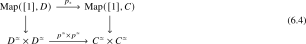
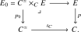
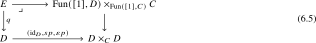
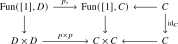
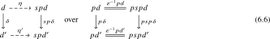
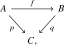
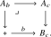
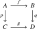
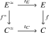

In this section, we introduce the functoriality of universals principle and discuss some elementary consequences.
6.1.1 Unique arrow lifts
Let us start by discussing a slightly simpler form of a functoriality principle.
Informally, categories are supposed to be governed by objects and arrows. Thus, one special situation in which we expect a functoriality principle to hold is when the values of the section \(s\) on arrows is uniquely constrained, in the sense that for each arrow \(\gamma\colon x\to y\) in \(C\) there is a unique arrow \(s_\gamma \colon s_x\to s_y\) in \(D\) with \(p(s_\gamma)= \gamma\) (compatibly with the given identifications \(p(s_x)=x\) and \(p(s_y)=y\)). The heuristic is that any associativity or higher coherence constraint will take place in a contractible anima. For example, given an identification \(\gamma=\gamma'\circ \gamma''\) there will be a unique identification \(s_\gamma=s_{\gamma'}\circ s_{\gamma''}\) living over it because both sides are (identified with) objects of the anima of lifts of \(\gamma\), which is contractible by assumption.
We will relate this principle to detection of equivalences by \(\Map([1],-)\), using the description of hom animae as fibers of the anima of arrows from Corollary 3.4.9.
Lemma 6.1.1. The following are logically equivalent:
(1) (\([1]\) detects equivalences)
Let \(p\colon D\to C\) be a functor. If \(p_*\colon \Map([1],D)\to \Map([1],C)\) is an equivalence, then so is \(p\).
(2) (Functoriality principle for sections with unique arrow lifts)
Let \(p\colon D\to C\) be a functor and \((x\in C)\mapsto (s_x\in D_x)\) an objectwise section. Assume that \(s\) has unique arrow lifts, i.e., for each arrow \(\gamma \colon x\to y\) in \(C\) there is a unique arrow \(\delta\colon s_x\to s_y\) with \(p\delta = \gamma\). Then there is a section \(s\) of \(p\) that extends the given objectwise assignment \(x\mapsto s_x\).
Remark 6.1.2. Note that each \(s_x \in D_x\) is really a pair consisting of \(s_x \in D\) and an identification \(\epsilon_x \colon p(s_x)=x\).
Making this unpacking explicit, the assumption in (2) translates to saying that the map \begin{equation} D(s_x,s_y)\xrightarrow{p} C(p(s_x),p(s_y))\xrightarrow[\simeq] {\epsilon_y\circ - \circ \epsilon^{-1}_x} C(x,y) \tag{6.1}\end{equation} of animae is an equivalence for all \(x,y \in C\).
Similarly unpacking the conclusion, it consists of a functor \(s\colon C\to D\) an identification \(\epsilon : ps=\id_C\) (jointly comprising a section of \(p\)), which extend the objectwise section in the sense that we have identifications \(s(x) = s_x\) and \((p(s(x))=p(s_x)\xrightarrow[=]{\epsilon_x} x) = \epsilon(x)\) for all \(x : C^\simeq\).
Proof
“ (1) \(\to\) (2) ” Assume that we have given an objectwise section \(x\mapsto (s_x,\epsilon_x)\) of \(p\) such that the map (6.1) is an equivalence. For each \(x,y : C^\simeq\), consider the composite map \begin{equation} (x=y) \xrightarrow{s} (s_x=s_y) \to (x=y) \tag{6.2}\end{equation} where the first map is induced by \(s\colon C^\simeq \to D^\simeq\) and the second one is obtained by restricting (6.1) to the subanimae of isomorphisms, i.e., identifications. This restriction is an equivalence: an inverse to the image of an arrow lifts through the given hom equivalence, and the two inverse identities lift through the corresponding hom equivalences as well. Thus an arrow between selected objects is invertible precisely when its image is invertible. For each \(x,y : C^\simeq\), the map (6.2) is (identified with) the identity; indeed it suffices to observe that \(\id_x\mapsto \epsilon_x \circ p(s(\id_x))\circ \epsilon^{-1}_x = \id_x\) for all \(x\). By \(2\)-out-of-\(3\) we conclude that each \(s\colon (x=y)\to (s_x=s_y)\) is an equivalence, i.e., that \(s\colon C^\simeq \to D^\simeq\) is an embedding.
Following Definition 3.2.5 we may thus define the full subcategory \(C'\coloneq \langle s\colon C^\simeq \subseteq D \rangle\) and consider the composite \begin{equation} p'\colon C' \xhookrightarrow{i} D \xrightarrow{p} C \tag{6.3}\end{equation} We claim that \(\Map([1],p')\) is an equivalence. Indeed, by the universal property of the full subcategory (Definition 3.2.2), applying \(\Map([1],-)\) to the sequence (6.3) and taking the fiber in the anima context of an arrow \(\gamma\colon x\to y\) yields \begin{align*} &(\gamma' : \Map([1],C'))\times (p'(\gamma')=\gamma) \\ &\simeq ((x',y') : \Map([1]^\simeq, C^\simeq)) \times (\delta : \Map([1],D)) \times ((s_{x'},s_{y'})=\partial\delta) \times (p\delta = \gamma) \\ &\simeq (\delta : D(s_{x},s_{y})) \times (p(\delta) =_{C(x,y)} \gamma) \end{align*} (keeping the identifications \(p(s_x)=x\) and \(p(s_y)=y\) implicit), which is contractible by assumption.
Thus we may apply (1) to \(p'\) to conclude that the composite \(p'\colon C'\to C\) is an equivalence. The composite \(s\colon C\simeq C' \hookrightarrow{i} D\) is then the desired section of \(p\); and it is straightforward to verify that it extends the given objectwise assignment.
“ (2) \(\to\) (1) ” Let \(p\) be such that \(\Map([1],p)\) is an equivalence. Since \(p^\simeq=\Map([0],p)\) is a retract of \(\Map([1],p)\) (because \([0]\) is a retract of \([1]\)), it follows that \(p^\simeq\) is an equivalence. Thus there is a unique section \(x\mapsto (s_x,ps=x)\) of \(p^\simeq\). We claim that this assignment satisfies the unique-arrow-lifting assumption. Indeed, for each \(x,y \in C\), the map (6.1) is identified with the map on vertical fibers at \((s_x,s_y)\) of the square

hence it is an equivalence by assumption. Applying (2) we thus obtain a section \(s\) of \(p\).Finally, note that \(\Map([1],s)\) is a section of \(\Map([1],p)\), hence itself an equivalence. Applying the just proven statement to \(s\) instead of \(p\), we get that \(s\) itself also has a section. It follows that \(s\), hence \(p\), is an equivalence.
6.1.2 Universal objects and the functoriality axiom
The functoriality principle for sections with unique arrow lifts admits an important special case:
Lemma 6.1.3. Let \(p\colon D\to C\) be a cocartesian fibration, and suppose that for every object \(x\) of \(C\) we are given a terminal object \(s_x\) of the fiber \(D_x\). Then for each object \(y\in C\) and \(d\in D\) and each arrow \(\gamma\colon p(d) \to y\), there is a unique lift of \(\gamma\) to an arrow \(d\to s_y\). In particular, \(s\) has unique arrow lifts.
Proof
We have the equivalence \[ (\delta : D(d,s_y))\times (p\delta=\gamma) \xleftarrow{\simeq} (\bar{\delta} : D(\gamma_! d, s_y)) \times (p\bar{\delta}= \id_y) \simeq D_y(\gamma_! d, s_y) \] of animae (given by precomposing with \(\lift_0^p(d,\gamma)\), see Lemma 4.5.7). The right side is contractible because \(s_y\) is a terminal object in the fiber \(D_y\).
To see that \(s\) has unique arrow lifts of an arrow \(\gamma \colon x\to y\), simply take \(d\coloneq s_x\).
A universal object is one which (together with some auxiliary data) is initial/terminal (among all objects equipped with similar data). For example, a limit is a terminal cone, a colimit is an initial cocone, and a tensor product of \(V,W\) is equipped with an initial bilinear map from \(V\times W\), etc.
We can now say what it means for such universal objects to be functorial: Let’s say that for each object \(x\in C\) we have a category \(D(x)\) in the anima context of \(x\), encoding some data that depends on \(x\), and assume that in each \(D(x)\) we have a universal (initial or terminal) object \(s_x\). If the category \(D(x)\) itself varies sufficiently functorially in \(x\), then we expect the \(s_x\) to “be functorial”, i.e., assemble to a functor \(s\) out of \(C\) in a canonical way. The way we express this is through the language of cartesian/cocartesian fibrations.
Definition 6.1.4 (Functoriality of universals). The functoriality of universals principle is the following assertion. Let \(p\colon E\to C\) be a cocartesian (resp. cartesian) fibration. Suppose that for every object \(x\) of \(C\) we are given a terminal (resp. initial) object \(s_x\) of the fiber \(E_x\). Then this family extends to a right (resp. left) adjoint section \(s\) of \(p\).
More explicitly, the family \(s_x\) is a terminal (resp. initial) object of \(E_x\) in context \(x:C^{\simeq}\). The total category of this contextual category is the pullback

Example 6.1.5. If \(C\) is the category of pairs of vector spaces, and \(D\) is the category of triples \(V,W,Z\) together with a bilinear map \(V\times W\to Z\), then we have the cartesian projection \(p\colon D\to C\). The fact that each fiber \(D(V,W)\) has an initial object, namely a tensor product \(V\times W \to V\otimes W\), means that by functoriality of universals one obtains a left adjoint section \(s\colon C \to D\) that maps \((V,W) \mapsto V\otimes W\).
Proposition 6.1.6. Assume that \([1]\) detects equivalences. Then universals are functorial.
Proof
By Lemma 6.1.3 the objectwise section \(x\mapsto s_x\) has unique arrow lifts; hence by Lemma 6.1.1 there is a section \(s\colon C\to D\) extending it (including the implicit identification \(\epsilon\colon ps=\id_C\)). It remains to show that the section \(s\) is indeed right adjoint (or left adjoint). Let us treat the cocartesian/right adjoint case.
Consider the following pullback
 
We claim that \(\Map([1],q)\) is an equivalence of animae.
For this, we must show that given an arrow \(\delta\colon d\to d'\) in \(D\),
there is a unique commutative square

Since \([1]\) detects equivalences, we conclude that \(q\) is an equivalence. We claim that the resulting functor \begin{equation} \eta\colon D\simeq E \to \Fun([1],D)\times_{\Fun([1],C)}C \tag{6.7}\end{equation} exhibits \(s\) as a right adjoint section of \(p\). By construction, \(\eta\) is a transformation over \(C\). By the dual of Proposition 4.4.12, it remains to show that the restricted transformation \begin{equation} C \times [1] \xrightarrow{s\times [1]} D \times [1] \xrightarrow{\eta} D \tag{6.8}\end{equation} is a natural isomorphism. By Proposition 3.4.6, we may check this objectwise. For each object \(x\in C\), naturality of \(\epsilon\) gives \(ps(\epsilon_x)=\epsilon_{psx}\). Hence the isomorphism \(s(\epsilon_x^{-1})\colon s_x\to s_{psx}\) and \(\eta_{s_x}\) lie over the same base arrow. By uniqueness of lifts into the selected terminal object, they are identified. Thus \(\eta_{s_x}\) is invertible, as required.
In the remainder of the book, we assume functoriality of universals.
Axiom L (Functoriality of universals). Universals are functorial in the sense of Definition 6.1.4: a family of terminal (resp. initial) objects in the fibers of a cocartesian (resp. cartesian) fibration extends to a right (resp. left) adjoint section, with the specified identification with the given family.
Any section extending the given family is automatically an adjoint section. To see this in the cocartesian case, let \(t\) be the right adjoint section supplied by the axiom, and let \(s\) be another section extending the family, with identification \(\varepsilon\colon ps=\id_C\). The unit \(\eta\) of \(p\dashv t\) gives a comparison map \[ s\xrightarrow{\eta s}tps\xrightarrow{t\varepsilon}t \] over \(C\). Its components are morphisms between terminal objects in the same fiber, hence are isomorphisms. By Proposition 3.4.6, this comparison is a natural isomorphism, so \(s\) is also a right adjoint section of \(p\). The cartesian case is dual.
In the next two sections, we will prove a converse to the preceding proposition: we show that functoriality of universals implies the Fundamental Theorem, which in turn implies that \([1]\) detects equivalences.
6.1.3 Universal objects in families
We first apply functoriality of universals to a left or right fibration with contractible fibers. This will give a criterion for initial and terminal objects in terms of their hom animae, which we can apply in any anima context.
Proposition 6.1.7. Let \(f\colon E \to B\) be a left (resp. right) fibration. Assume that the fiber \(E_b\) of \(f\) at \(b\) is contractible for every object \(b\) of \(B\). Then \(f\) is an equivalence.
Proof
We treat left fibrations; the right-fibration case is dual. In context \(b:B^{\simeq}\), the contractible category \(E_b\) has a terminal object. Since a left fibration is cocartesian, functoriality of universals gives a right adjoint section \(s\colon B\to E\) of \(f\). Its unit \(\eta\colon\id_E\to sf\) lies over identities in \(B\), using the section identification \(fs=\id_B\) and the triangle identity.
Left fibrations reflect isomorphisms, by Corollary 4.2.3. Thus every component of \(\eta\) is invertible, and Proposition 3.4.6 makes \(\eta\) a natural isomorphism. Together with \(fs=\id_B\), this exhibits \(s\) as an inverse to \(f\).
Lemma 6.1.8. Let \(f\colon E\to B\) be a cocartesian fibration. Then \(f\) is a left fibration if and only if every fiber \(E_b\) is an anima in the context of \(b\). Equivalently, the pullback \(B^{\simeq}\times_B E\) is an anima. Dually, a cartesian fibration with anima fibers is a right fibration.
Proof
By Lemma 5.3.14, the contextual fiber condition is equivalent to the stated condition on the total category over \(B^{\simeq}\). If \(f\) is a left fibration, its pullback to \(B^{\simeq}\) is a left fibration over an anima and hence is an anima by Corollary 4.2.5. Conversely, factor a morphism \(u\colon x\to y\) as its chosen cocartesian lift followed by the vertical morphism \(c_u\). This map belongs to the pullback over \(B^{\simeq}\) and is therefore invertible. These morphisms are the components of the counit of the left adjoint section of \(\vec{\ev}_0^f\). By the objectwise criterion for natural isomorphisms from Proposition 3.4.6, that counit is thus a natural isomorphism, showing that \(\vec{\ev}_0^f\) is an equivalence. It follows that \(f\) is a left fibration.
Lemma 6.1.9 (Anima-indexed slices). Let \(A\) be an anima and \(t\colon A\to X\) a functor. The projection \[ X\vectimes{t}A\longrightarrow X \] from the category of arrows \(x\to t(a)\) is a right fibration.
Proof
It is a cartesian fibration by the dual of Proposition 4.6.5. In context \(x:X^{\simeq}\), its fiber is the dependent sum \(\Sigma_{a:A}X(x,t(a))\). This is an anima by Lemma 5.3.14. The claim follows from the dual of Lemma 6.1.8.
Lemma 6.1.10. Let \(x\) be an object of a category \(C\). Then \(x\) is initial if and only if for every other object \(y\) of \(C\) the hom anima \(C(x,y)\) is contractible. Dually, \(x\) is terminal if and only if \(C(y,x)\) is contractible for every object \(y\) of \(C\).
Proof
By Lemma 4.4.19, the object \(x\) is initial if and only if the forgetful functor \(C_{x/} \to C\) is an equivalence. Since this functor is a left fibration by Theorem 4.3.3, it follows from Proposition 6.1.7 that it is an equivalence if and only if all of its fibers \(C(x,y)\) are contractible.
Lemma 6.1.11 (Recognizing terminal families). Let \(q\colon X\to A\) be a functor to an anima, and let \(t\colon A\to X\) be a section with identification \(\varepsilon\colon qt=\id_A\). In context \(a:A\), suppose that \[ X_a(x,t(a)) \] is contractible for every object \(x\) of \(X_a\). Then \(t\) is a right adjoint section of \(q\), with counit \(\varepsilon\). There is a dual criterion for initial families.
Proof
In context \(a:A\), the preceding lemma shows that \(t(a)\) is terminal in \(X_a\). By Proposition 5.3.11, this is equivalent to \(t\) being a right adjoint section of \(q\) with the given counit. The initial case is dual.
6.1.4 Fiberwise equivalences of left and right fibrations
The contractible-fiber criterion from Proposition 6.1.7 also lets us recognize equivalences and pullback squares between left or right fibrations on their fibers.
Lemma 6.1.12. Consider a commutative triangle

Proof
The functor \(f\) is also a left (resp. right) fibration by Proposition 4.2.16. It suffices by Proposition 6.1.7 to show that its fibers are contractible. Work in the anima context of an object \(b\) of \(B\), and put \(c=q(b)\). There is a pullback square in this context

Corollary 6.1.13. Consider a commutative square

Proof
Since left (resp. right) fibrations are closed under base change by Proposition 4.2.15, the functor \(B \times_D C \to C\) is a left (resp. right) fibration. The square is a pullback square if and only if the map \((f,p)\colon A \to B \times_D C\) is an equivalence over \(C\). By Lemma 6.1.12, we may check this condition fiberwise, where it precisely becomes the claim that the induced map \(A(x) \to B(g(x))\) is an equivalence.
Corollary 6.1.14. Let \(f\colon E \to C\) be a left (resp. right) fibration. Then the commutative square

Proof
Note that the functor \(f^{\simeq}\) is again a left (resp. right) fibration by Proposition 4.2.4, since both its source and target are animae. By Corollary 6.1.13 it will thus suffice to show that \(\imath_E\) induces equivalences on all fibers over \(C^{\simeq}\). But given an object \(x\) of \(C\), the induced map on fibers is \(\imath_{E_x}\colon (E_x)^{\simeq} \to E_x\), which is an equivalence since \(E_x\) is an anima by Corollary 4.2.6.